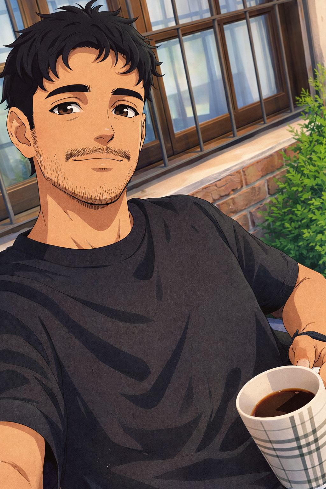

Empecé en el mundo del deporte y el entrenamiento. Trabajé con atletas, fui entrenador físico, y ahí entendí algo que los libros no enseñan: el cuerpo que se mueve bien rara vez duele. El problema es cuando algo lo frena.
Eso me llevó a la kinesiología. Quería entender por qué la gente tiene dolor crónico — ese dolor que no se va, que vuelve, que los médicos no terminan de resolver. Hoy trabajo exactamente con esas personas.
Mi enfoque integra kinesiología, masaje terapéutico y entrenamiento funcional. No son tres cosas separadas — son tres herramientas del mismo proceso: evaluar, tratar y fortalecer.
El objetivo siempre es el mismo: que el dolor no vuelva y que puedas moverte con libertad.
Ver los servicios"Cuando el cuerpo deja de doler, la vida cambia.
No al revés."
— Maxi Bargas
Antes de tratar, evaluamos. Cada dolor tiene una causa específica — y hay que encontrarla antes de intervenir.
No trabajo sobre el síntoma. Trabajo sobre la estructura, el movimiento y los patrones que generaron el problema.
Desde el tratamiento pasamos al movimiento. El objetivo es que el cuerpo no solo deje de doler — que funcione bien.
Te explico qué está pasando en tu cuerpo y por qué. Entender el propio problema es parte del tratamiento.
Cada proceso empieza con una evaluación detallada. Sin diagnóstico claro, no hay tratamiento efectivo.
Busco el origen del dolor, no solo la zona que duele. La raíz importa más que el síntoma.
El objetivo no es que el dolor se calme — es que el cuerpo funcione bien y de forma independiente.
Reservá tu primera sesión y empezamos a evaluar.
Reservar una sesión